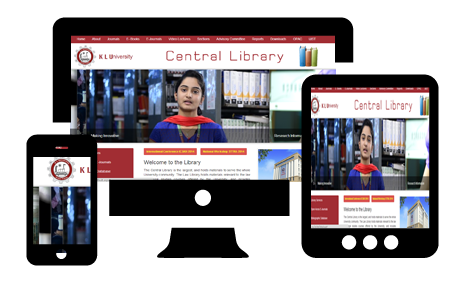

Home
E-Journals
ASCE
ASME
CMIE Prowess
EBSCO Architecture
EBSCO Business
IEEE
J-GATE
Manupatra
Natue Biotechnology
Oxford Univ Press
LexisNexis
Turnitin
DELNET
Web of Science
SCOPUS
Bentham Science
Springer
PROQUEST
INDIA STAT
Mathscinet
British council library
E-Books
Open access Resources
Institutional Repository
Previous Question Papers
Rare Books
Print Journals
Library Staff
LAC
Library Manual
OPAC
Resources
Sections
Video Lectures
NPTEL
SWAYAM
MIT
KLEF WISE
SUBJECT WISE
FAQ
Ask the Librarian
Library Broucher
Feed Back Form

Academic Conferences
World Wide
India
Bibliographic Database
College of Law - Resources
Books -OPAC
Print Journals
E-Journals (Subscribed by KLEF)
A – Z Law Databases
Related Links
Web Sources
Department Libraries
Open Acess E-Journals
Open Access E-Books
Library Services
Theses and Dissertations
Library Rules
Open Acess E-Journals
NAME OF THE E-JOURNAL
URL
Agriculture and Food Sciences
AGRICULTURAE CONSPECTUS SCIENTIFICUS
http://www.agr.hr/smotra/issues.htm
AGRONOMY RESEARCH
http://www.eau.ee/~agronomy/
AMERICAN JOURNAL OF ANIMAL AND VETERINARY SCIENCES
http://www.scipub.org/scipub/c4p.php?j_id=AJAV
AN INTERNATIONAL JOURNAL ON FRESHWATER ECOSYSTEM
http://www.kmae-journal.org/
ANNUAL REVIEW OF BIOMEDICAL SCIENCES
http://arbs.biblioteca.unesp.br/index.php/arbs
ASIAN JOURNAL OF CROP SCIENCE
http://scialert.net/jindex.php?issn=1994-7879
ASIAN JOURNAL OF PLANT SCIENCES
http://scialert.net/jindex.php?issn=1682-3974
CROATIAN JOURNAL OF FOREST ENGINEERING
http://hrcak.srce.hr/index.php?show=casopis&id_casopis=91
INTERNATIONAL JOURNAL OF POULTRY SCIENCE
http://scialert.net/jindex.php?issn=1682-8356
IRAQI JOURNAL OF VETERINARY SCIENCES
http://vetmedmosul.org/ijvs/
JOURNAL OF THE INTERNATIONAL SOCIETY OF SPORTS NUTRITION
http://www.jissn.com/
NUTRITION JOURNAL
http://www.nutritionj.com/
Arts and Architecture
INTERNATIONAL JOURNAL OF ARCHITECTURAL RESEARCH
http://archnet.org/gws/IJAR/
INTERNATIONAL JOURNAL OF COMMUNITY MUSIC
http://www.intljcm.com/
INTERNATIONAL JOURNAL OF DESIGN
http://www.ijdesign.org/ojs/index.php/IJDesign/
JOURNAL OF THE FACULTY OF ARCHITECTURE
http://jfa.arch.metu.edu.tr/
THE INTERNATIONAL JOURNAL OF THE CREATIVE ARTS IN INTERDISCIPLINARY PRACTICETHE JOURNAL OF RELIGION AND FILM
http://www.ijcaip.com/index.html
Biology and Life Sciences
ADVANCES IN ENVIRONMENTAL BIOLOGY
http://www.aensi.org/cgi-sys/suspendedpage.cgi
AFRICAN JOURNAL OF BIOMEDICAL RESEARCH
http://www.bioline.org.br/md
AMERICAN JOURNAL OF BIOCHEMISTRY AND BIOTECHNOLOGY
http://www.scipub.org/scipub/c4p.php?j_id=AJBB
ANNUAL REVIEW OF BIOMEDICAL SCIENCES
http://arbs.biblioteca.unesp.br/index.php/arbs
BIOTECHNOLOGY FOR BIOFUELS
http://www.biotechnologyforbiofuels.com/home
BMC CELL BIOLOGY
http://www.biomedcentral.com/bmccellbiol/
BMC DEVELOPMENTAL BIOLOGY
http://www.biomedcentral.com/bmcdevbiol/
GENOMICS, SOCIETY AND POLICY JOURNAL
http://www.gspjournal.com/
INTERNATIONAL JOURNAL OF BIOLOGY
http://ccsenet.org/journal/index.php/ijb/
JOURNAL OF PROTEOMICS & BIOINFORMATICS
http://www.omicsonline.com/jpbhome.php
NUTRITION & METABOLISM
http://www.nutritionandmetabolism.com/home/
Business and Economics
BUSINESS INTELLIGENCE JOURNAL
http://www.saycocorporativo.com/saycoUK/BIJ/journals.html
ELECTRONIC JOURNAL OF KNOWLEDGE MANAGEMENT
http://www.ejkm.com/main.html
FINANCIAL COUNSELING AND PLANNING
http://www.afcpe.org/publications/journal-articles.php
INTERNATIONAL JOURNAL OF BUSINESS SCIENCE AND APPLIED MANAGEMENT
http://www.business-and-management.org/
INTERNATIONAL JOURNAL OF ECONOMIC SCIENCES AND APPLIED RESEARCH
http://www.ijesar.org/
JOURNAL OF INDUSTRIAL ENGINEERING AND MANAGEMENT
http://www.jiem.org/index.php/jiem
THE EUROPEAN JOURNAL OF COMPARATIVE ECONOMICS
http://eaces.liuc.it/
THE EUROPEAN JOURNAL OF COMPARATIVE ECONOMICS
http://eaces.liuc.it/
THE INTERNATIONAL JOURNAL OF DIGITAL ACCOUNTING RESEARCH
http://www.ijdar.org/aims-and-scope
TRENDS IN AGRICULTURAL ECONOMICS
http://scialert.net/jindex.php?issn=1994-7933
Chemistry
ADVANCES IN PHYSICAL CHEMISTRY
http://www.hindawi.com/journals/apc/
ATMOSPHERIC CHEMISTRY AND PHYSICS
http://www.atmos-chem-phys.net/volumes_and_issues.html
BIOINORGANIC CHEMISTRY AND APPLICATIONS
http://www.hindawi.com/journals/bca/
CHEMICAL INDUSTRY & CHEMICAL ENGINEERING QUARTERLY
http://www.ache.org.rs/CICEQ/CI&CEQ.html
CHEMISTRY CENTRAL JOURNAL
http://journal.chemistrycentral.com/home/
INTERNATIONAL JOURNAL OF ANALYTICAL CHEMISTRY
http://www.hindawi.com/journals/ijac/
INTERNATIONAL JOURNAL OF CHEMICAL ENGINEERING
http://www.hindawi.com/journals/ijce/
INTERNATIONAL JOURNAL OF ELECTROCHEMICAL SCIENCE
http://www.electrochemsci.org/
INTERNATIONAL JOURNAL OF INORGANIC CHEMISTRY
http://www.hindawi.com/journals/ijic/
INTERNATIONAL JOURNAL OF MOLECULAR SCIENCES
http://www.mdpi.com/journal/ijms
INTERNET ELECTRONIC JOURNAL OF MOLECULAR DESIGN
http://www.biochempress.com/
JOURNAL OF AUTOMATED METHODS AND MANAGEMENT IN CHEMISTRY
http://www.hindawi.com/journals/jammc/
ORGANIC CHEMISTRY INTERNATIONAL
http://www.hindawi.com/journals/oci/
Earth and Environmental Sciences
AMERICAN JOURNAL OF ENVIRONMENTAL SCIENCES
http://www.scipub.org/scipub/c4p.php?j_id=AJES
ANNALES GEOPHYSICAE
http://www.annales-geophysicae.net/
ATMOSPHERIC CHEMISTRY AND PHYSICS
http://www.atmos-chem-phys.net/volumes_and_issues.html
ESTONIAN JOURNAL OF EARTH SCIENCES
http://www.kirj.ee/earthsciences
GEOCHEMICAL TRANSACTIONS
http://www.geochemicaltransactions.com/
INTERNATIONAL JOURNAL OF NAVIGATION AND OBSERVATION
http://www.hindawi.com/journals/ijno/
INTERNATIONAL JOURNAL OF SPELEOLOGY
http://www.ijs.speleo.it/
JOURNAL OF GEOSCIENCES
http://www.jgeosci.org/
Health Sciences
BRAZILIAN DENTAL JOURNAL
http://www.forp.usp.br/bdj/
DENTAL RESEARCH JOURNAL
http://journals.mui.ac.ir/drj
INDIAN JOURNAL OF DENTAL RESEARCH
http://www.ijdr.in/
INTERNATIONAL JOURNAL OF DENTISTRY
http://www.hindawi.com/journals/ijd/
JOURNAL OF DENTAL BIOMECHANICS
http://www.sage-hindawi.com/journals/jdb/
History and Archaeology
AESTIMATIO: CRITICAL REVIEWS IN THE HISTORY OF SCIENCE
http://www.ircps.org/publications/aestimatio/aestimatio.htm
AMERICAN STUDIES JOURNAL
http://asjournal.zusas.uni-halle.de/
E-JOURNAL OF PORTUGUESE HISTORY
http://www.brown.edu/Departments/Portuguese_Brazilian_Studies/ejph/
ELECTRONIC JOURNAL OF AFRICANA BIBLIOGRAPHY
http://ir.uiowa.edu/ejab/
JOURNAL OF DAGAARE STUDIES
http://www.hku.hk/linguist/staff/Bodomo/JDS/all.html
JOURNAL OF HISTORICAL BIOGRAPHY
http://journals.ucfv.ca/jhb/
THE ARKEOTEK JOURNAL
http://www.thearkeotekjournal.org/
Languages and Literatures
AMERICAN STUDIES JOURNAL
http://asjournal.zusas.uni-halle.de/
JOURNAL OF DAGAARE STUDIES
http://www.hku.hk/linguist/staff/Bodomo/JDS/all.html
LANGUAGE LEARNING & TECHNOLOGY
http://llt.msu.edu/default.html
REVISTA LETRA MAGNA
http://www.letramagna.com/
SEMANTICS AND PRAGMATICS
http://semprag.org/
Law and Political Science
ACTA UNIVER SITATIS DANUBIUS. JURIDICA
http://journals.univ-danubius.ro/index.php/juridica
CENTRAL EUROPEAN JOURNAL OF PUBLIC POLICY
http://www.cejpp.eu/index.php/ojs
GOETTINGEN JOURNAL OF INTERNATIONAL LAW
http://www.gojil.eu/
INTERNATIONAL JOURNAL OF COMMUNICATIONS LAW AND POLICY
http://www.ijclp.net/
INTERNATIONAL JOURNAL OF NOT-FOR-PROFIT LAW
http://www.icnl.org/knowledge/ijnl/
INTERNATIONAL JOURNAL OF THE COMMONS
http://www.thecommonsjournal.org/index.php/ijc
JOURNAL OF AUTOIMMUNE DISEASES
http://www.jautoimdis.com/
JOURNAL OF INTERNATIONAL COMMERCIAL LAW AND TECHNOLOGY
http://www.jiclt.com/index.php/jiclt
THE INTERNATIONAL JOURNAL OF INCLUSIVE DEMOCRACY
http://www.inclusivedemocracy.org/journal/
UNIVERSITY OF OTTAWA LAW AND TECHNOLOGY JOURNAL
http://www.uoltj.ca/
Mathematics and Statistics
ASIAN JOURNAL OF ALGEBRA
http://www.scialert.net/jindex.php?issn=1994-540x
ASIAN JOURNAL OF MATHEMATICS AND STATISTICS
http://scialert.net/jindex.php?issn=1994-5418
COMMUNICATIONS IN MATHEMATICAL ANALYSIS
http://www.commun-math-anal.org/index.html
DIFFERENTIAL EQUATIONS AND NONLINEAR MECHANICS
http://www.hindawi.com/journals/denm/
IAENG INTERNATIONAL JOURNAL OF APPLIED MATHEMATICS
http://www.iaeng.org/IJAM/current_issue.html
INTERNATIONAL ELECTRONIC JOURNAL OF MATHEMATICS EDUCATION
http://www.iejme.com/
INTERNATIONAL JOURNAL OF APPLIED MATHEMATICS AND COMPUTATION
http://ijamc.psit.in/ijamc/index.php/ijamc/index
INTERNATIONAL JOURNAL OF DIFFERENTIAL EQUATIONS
http://www.hindawi.com/journals/ijde/
INTERNATIONAL JOURNAL OF ENGINEERING SCIENCE AND TECHNOLOGY
http://www.ijest.info/index.php
INTERNATIONAL JOURNAL OF MATHEMATICS AND MATHEMATICAL SCIENCES
http://www.hindawi.com/journals/ijmms/
INTERNATIONAL JOURNAL OF QUALITY, STATISTICS, AND RELIABILITY
http://www.hindawi.com/journals/ijqsr/
Philosophy and Religion
ETHIC@: AN INTERNATIONAL JOURNAL FOR MORAL PHILOSOPHY
http://www.cfh.ufsc.br/ethic@/
JOURNAL FOR THE STUDY OF RELIGIONS AND IDEOLOGIES
http://jsri.ro/new/
JOURNAL OF MEN, MASCULINITIES AND SPIRITUALITY
http://www.jmmsweb.org/
JOURNAL OF RESEARCH PRACTICE
http://jrp.icaap.org/index.php/jrp
STUDIA PHILOSOPHICA ESTONICA
http://www.spe.ut.ee/ojs-2.2.2/index.php/spe/index
THE AUSTRALASIAN JOURNAL OF LOGIC
http://www.philosophy.unimelb.edu.au/ajl/index.html
THEOLOGICAL LIBRARIANSHIP
http://journal.atla.com/ojs/index.php/theolib
Physics and Astronomy
ADVANCES IN ASTRONOMY
http://www.hindawi.com/journals/aa/
ADVANCES IN CONDENSED MATTER PHYSICS
http://www.hindawi.com/journals/acmp/
ADVANCES IN HIGH ENERGY PHYSICS
http://www.hindawi.com/journals/ahep/
ADVANCES IN MATHEMATICAL PHYSICS
http://www.hindawi.com/journals/amp/
ASTROPHYSICS AND SPACE SCIENCES TRANSACTIONS
http://www.astrophys-space-sci-trans.net/volumes_and_issues.html
ATMOSPHERIC CHEMISTRY AND PHYSICS
http://www.atmos-chem-phys.net/volumes_and_issues.html
COMMUNICATING ASTRONOMY WITH THE PUBLIC
http://www.capjournal.org/
JOURNALELECTRONICJOURNAL OF THEORETICAL PHYSICS
http://www.ejtp.com/
Science General
ASIAN JOURNAL OF SCIENTIFIC RESEARCH
http://scialert.net/jindex.php?issn=1992-1454
ETHICS IN SCIENCE AND ENVIRONMENTAL POLITICS
http://www.int-res.com/journals/esep/
INTERNATIONAL JOURNAL OF INTERNET SCIENCE
http://ijis.net/
JOURNAL OF APPLIED SCIENCE & ENGINEERING TECHNOLOGY
http://library.rit.edu/oajournals/index.php/jaset
JOURNAL OF BIOMEDICAL DISCOVERY AND COLLABORATION
http://www.uic.edu/htbin/cgiwrap/bin/ojs/index.php/jbdc/index
JOURNAL OF KING ABDULAZIZ UNIVERSITY: SCIENCE
http://www.kau.edu.sa/centers/spc/jkau/Science/
SILPAKORN UNIVERSITY SCIENCE AND TECHNOLOGY JOURNAL
http://www.journal.su.ac.th/index.php/sustj/index
UPGRADE: THE EUROPEAN JOURNAL FOR THE INFORMATICS PROFESSIONAL
http://www.upgrade-cepis.org/index.html
Social Sciences
ANNALS OF LIBRARY AND INFORMATION STUDIES
http://nopr.niscair.res.in/handle/123456789/66
ANTHROPOETICS: THE JOURNAL OFGENERATIVE ANTHROPOLOGY
http://www.anthropoetics.ucla.edu/anthro.htm
ASEAN JOURNAL OF TEACHING & LEARNING IN HIGHER EDUCATION
http://pkukmweb.ukm.my/jtlhe/
BULLETIN OF APPLIED COMPUTING AND INFORMATION TECHNOLOGY
http://www.naccq.ac.nz/bacit/
FIBRECULTURE JOURNAL
http://journal.fibreculture.org/
INFORMATICA ECONOMICA JOURNAL
http://revistaie.ase.ro/
INTERNATIONAL JOURNAL OF PSYCHOLOGY AND PSYCHOLOGICAL THERAPY
http://www.ijpsy.com/
JOURNAL OF INFORMATION AND ORGANIZATIONAL SCIENCES
http://jios.foi.hr/index.php/jios/index
LIBRARY STUDENT JOURNAL
http://www.librarystudentjournal.org/index.php/lsj
REVISTA NUEVA ANTROPOLOGIA
http://redalyc.uaemex.mx/src/inicio/HomRevRed.jsp?iCveEntRev=159
THE INTERNET JOURNAL OF MENTAL HEALTH
http://www.ispub.com/ostia/index.php?xmlFilePath=journals/ijmh/front.xml
THEOLOGICAL LIBRARIANSHIP
http://journal.atla.com/ojs/index.php/theolib
Technology and Engineering
ADVANCES IN ARTIFICIAL NEURAL SYSTEMS
http://www.hindawi.com/journals/aans/
ADVANCES IN ELECTRICAL AND COMPUTER ENGINEERING
http://www.aece.ro/index.php
ADVANCES IN MATERIALS SCIENCE AND ENGINEERING
http://www.hindawi.com/journals/amse/
ADVANCES IN MECHANICAL ENGINEERING
http://www.hindawi.com/journals/ame/
ADVANCES IN SOFTWARE ENGINEERING
http://www.hindawi.com/journals/ase/
AMERICAN JOURNAL OF ENGINEERING AND APPLIED SCIENCES
http://www.scipub.org/scipub/c4p.php?j_id=ajeas
AMERICAN JOURNAL OF FOOD TECHNOLOGY
http://scialert.net/jindex.php?issn=1557-4571
CHEMICAL ENGINEERING RESEARCH BULLETIN
http://www.banglajol.info/index.php/CERB/index